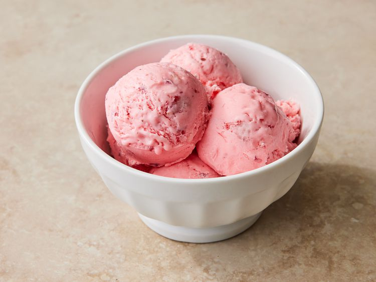

Strawberry Ice Cream

Strawberry Ice Cream Ingredients
These are the simple ingredients you’ll need to make this homemade strawberry ice cream:
- Strawberries: This homemade ice cream starts with two cups of mashed fresh strawberries.
- Milk and cream: Whole milk and heavy cream are essential to this rich homemade strawberry ice cream.
- Sugar: You’ll need a cup of white sugar for this sweet, fruity dessert.
- Vanilla and salt: Vanilla extract and salt enhance the overall flavor of the strawberry ice cream.
- Food coloring (optional): While red food coloring isn’t required, it helps achieve the vibrant color you normally associate with strawberry ice cream.
How to Make Homemade Strawberry Ice Cream
Here’s a brief overview of what you can expect when you make strawberry ice cream at home:
Combine all the ingredients in a large bowl, transfer the mixture to the freezer bowl of an ice cream maker,
and freeze according to the manufacturer’s directions. Transfer the ice cream to an airtight container and freeze until firm.